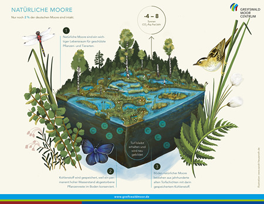
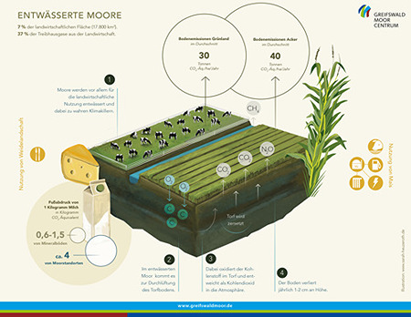
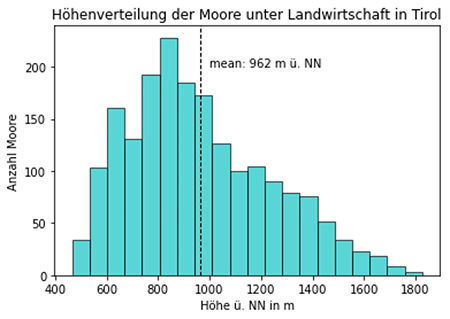
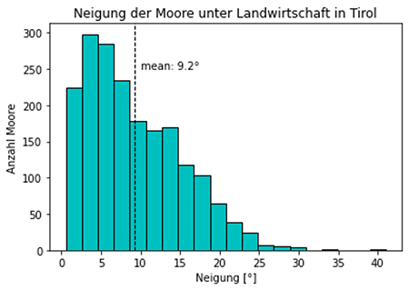

MoTouLaTirol
Das langsame Verschwinden der Moore
Willkommen auf unserer Webseite! Wir, das sind Felix, Helena und Lea, studieren den Geographiemaster
"Globaler Wandel - regionale Nachhaltigkeit" an der Universität Innsbruck. Im Projekt
MoTouLaTirol beschäftigen wir uns mit Mooren und
Torfkörpern, die sich unter Landwirtschaftlich
genutzten Flächen in Tirol, Österreich, befinden. Um euch die ganze Thematik näher
zu bringen, haben wir drei Webseiten erstellt. Auf dieser ersten Seite findet ihr hilfreiche
Informationen über Moore und Torfkörper, wie sie entstehen und warum es so wichtig ist sie zu
schützen!
Klicke auf eins der Bilder um zur Infokarte oder zur thematischen Wanderung zu gelangen .
 |
 |
Was sind Moore und Torfkörper?
Moore und Torfkörper stellen Ökosysteme dar, welche sich in Gebieten mit anhaltend hohem Wasserstand, befinden, weshalb der Boden durch den Mangel an Sauerstoff geprägt ist. Der Abbau des organischen Materials ist gehemmt und infolgedessen bildet sich Torf, wobei man ab einer Torfmächtigkeit von 30 cm von einem Moor spricht.
Das Verschwinden der Moore und ihr Klimaschutzpotenzial
Moore stellen nicht nur einen Lebensraum für geschützte Tier- und Pflanzenarten dar, sie dienen auch als wichtiger Kohlenstoffspeicher. Durch den feuchten Zustand werden abgestorbene Pflanzenreste dauerhaft im Boden konserviert, wodurch Torf entsteht (Graphik 1). Um Moorflächen für die Landwirtschaft nutzbar zu machen, werden diese seit Jahrhunderten entwässert (Graphik 2). Dadurch entweicht das gespeicherte Kohlenstoffdioxid in die Atmosphäre und verstärkt somit den Klimawandel. Je tiefer dabei ein Moorboden entwässert wird, desto mehr Kohlenstoffdioxid wird freigesetzt. Eine klimafreundliche landwirtschaftliche Nutzung von Mooren stellt die Paludikultur dar. Anstatt ein Moor zu entwässern, werden Pflanzen angebaut, welche an den hohen Wasserstand im Boden angepasst sind, so zum Beispiel Schilfe oder Torfmoose.
| 
|

|
{kind=link}
{kind=link}
Die Forschungsprojekte TiMo1 und TiMo2
Die Erstellung dieser Webseiten (Projekt „MoTouLaTirol“) bettet sich in die Forschungsprojekte TiMo1 (Leitung: Assoz. Univ-Prof Dr. Clemens Geitner, Mitarbeiter:innen: Lorenz Hänchen, Lukas Huemer, Sophia Neuner, Maya Simon) und TiMo2 (Leitung: Assoz. Univ-Prof Dr. Clemens Geitner, Mitarbeiter:innen: Elisabeth Schaber, Helena Back, Thomas Canal, Lea Oertlin) am Institut für Geographie an der Universität Innsbruck ein. Um regionale Kohlenstoffspeicher von Mooren und Torfkörper in Tirol besser abschätzen zu können, wurde im Projekt TiMo1 (Abschluss und Publikation: 2019) zunächst ein Datensatz erstellt, welcher Moore und Torfkörper unter landwirtschaftlich genutzter Fläche in Tirol beinhaltet.
| Über den Datensatz:
Der Datensatz wurde im Rahmen der Masterarbeit von Lukas Huemer erstellt und besteht aus Shapefiles der identifizierten Moore und Torfkörper unter landwirtschaflich genutzten Flächen in Tirol. Er basiert auf folgenden Datengrundlagen:
|
Das Forschungsprojekt TiMo2 (Beginn: 2022) baut auf TiMo1 auf und soll die Moore und Torfkörper unter landwirtschaftlich genutzter Fläche in Tirol als wichtiger Kohlenstoffspeicher weiter untersuchen. So wird mit dem eben vorgestellten Datensatz weitergearbeitet, um natürliche und gesellschaftliche Rahmenbedingungen sowie das Klimaschutzpotenzial besser einschätzen zu können. Eine differenzierte Betrachtung und Bewertung der im Datensatz vorhandenen Moor- und Torfkörperflächen kann als Grundlage für die Umsetzung von Schutzstrategien dienen, da beispielsweise Flächen mit einem besonders hohen Klimaschutzpotenzial und geringen Hürden bei der Wiedervernässung identifiziert werden können.
Über die Moore und Torfkörper unter landwirtschaftlich genutzter Fläche in Tirol
In Österreich kommen Moore vor allem an feucht-kühlen Gebieten im Alpenvorland und den Alpen vor, wobei rund 90% der Moore inzwischen landwirtschaftlich genutzt werden und dafür entwässert wurden. Trotzdem ist in diesen Torfböden Kohlenstoffdioxid gespeichert, zusammengerechnet sogar mehr als in den noch intakten Mooren. In Tirol befinden sich besonders viele „MoTouLas“ (ca. 230) auf einer Höhe von etwas über 800 m ü. NN (Graphik 1). Aus Graphik 2 wird ersichtlich in welchen Neigungsverhältnissen die „MoToulas“ vorkommen. Die meisten der identifizierten Moore befinden sich an 2,5°-6° geneigten Hängen, während die Anzahl mit steigender Neigung tendenziell abnimmt.
| 
|

|
Du möchtest dich nun mehr mit dem Thema Moor auseinandersezten?
|
Literatur
- Geitner et al. (2019): Tiroler Moore unter Landwirtschaft - Datenlage und Flächenanteile, Nutzungsgeschichte und Zukunftsperspektiven, diskutiert am Beispiel des Viller Moors bei Innsbruck.
- Greifswald Moor Center (2018): Informationspapier zur Rolle der Moore in der Gemeinsamen Agrarpolitik (GAP) ab 2021.
- Niedermair et al. (2011): Moore im Klimawandel. Studie des WWF Österreich, der Österreichischen Bundesforste und des Umweltbundesamtes.
- Spektrum Akademischer Verlag (o.J.): Lexikon der Geographie: Moore.
- Spektrum Akademischer Verlag (o.J.): Lexikon der Geographie: Torf.